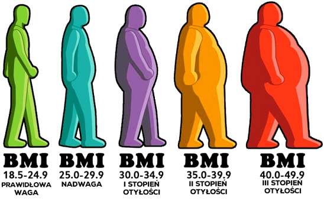

"Kalkulator BMI, czyli indeks masy ciała został opracowany prawie 200 lat temu przez belgijskiego statystyka Adolfa Queteleta.
Do powszechnego użytku wszedł w latach 70-tych XX wieku. Obecnie posługują się nim liczne organizacje i ośrodki zajmujące się zdrowiem.
BMI (ang. Body Mass Index - wskaźnik masy ciała) to wskaźnik, którego wynik pozwoli ci ocenić, czy twoja waga utrzymuje się w normie, czy nie."
